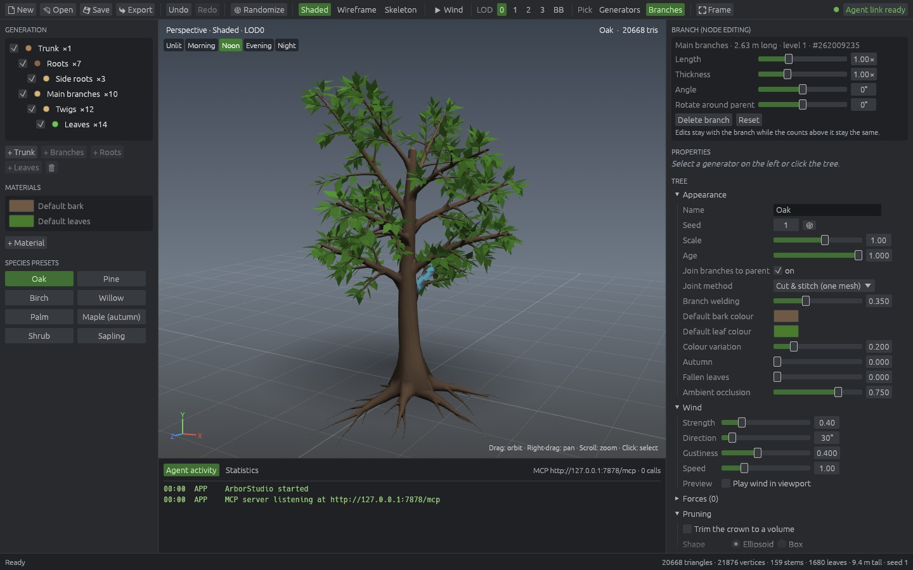
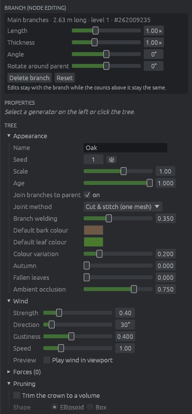

Editing single branches
Generators shape all branches of a level at once. Node editing changes one particular branch: shorten a branch that blocks a path, remove one that crosses another, or turn a limb towards the camera. Edits are saved with the project and included in exports.
Selecting a branch
- In the toolbar, set Pick to Branches.
- Click a branch in the viewport. It is highlighted in blue, and the Branch (node editing) section appears at the top of the Properties panel.
- To return to normal selection, set Pick back to Generators.

Branch settings
The first line names the generator the branch belongs to, its length, its level (0 for trunks, 1 for main branches and so on) and its key, a number that identifies the branch.

- Length 0.05× to 3×
- Multiplies the length of the branch. Branches and leaves growing on it move with it and are placed along the new length.
- Thickness 0.1× to 3×
- Multiplies the radius of the branch.
- Angle −120° to 120°
- Adds to the angle between the branch and its parent. Positive values open the branch further away from the parent.
- Rotate around parent −180° to 180°
- Turns the branch around its parent stem.
- Delete branch
- Removes the branch together with everything that grows on it. While the branch is still selected, the button changes to Restore branch.
- Reset
- Removes all edits of this branch.
When at least one branch is edited, a line below the settings shows how many branches are edited and deleted. Clear all removes every hand edit and restores deleted branches.
When edits are kept
Each edit is stored with the key of its branch. The key depends on the branch's position in the hierarchy: which parent it grows on and its place on that parent. Edits therefore survive changes to most settings, such as angles, gravity, thickness or colours.
When you change a setting that adds or removes branches above an edited branch, such as the Count of its own or a parent generator, or the seed, the branches are numbered anew and the edits may apply to different branches or to none. Make node edits as the last step, after the generators are set up.
Node editing for agents
Agents use list_nodes to list branches with their keys, generator, level and length, and edit_node to change one. clear_node_edits removes all edits. See Working with coding agents.